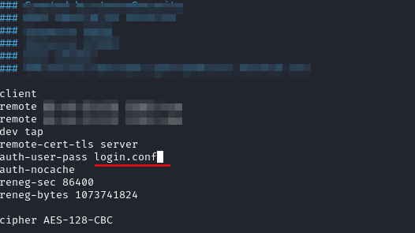

openVPN
After some time(24 hours more or less) that we are connected to a network openVPN could disconnect us and give the error:

1. Create a new configuration (.conf) file in the same folder of the .ovpn file with the credentials to access to the network.
echo 'username\npassword' > login.conf && chmod 600 login.conf
◇ replace username/password with the actual creds you get per lab. They have to be on different lines (because of that i have used \n)
◇ chmod 600 restricts permissions so that the creds file is not accessible to all groups.
◇ Instead of login.conf we could name it whatever you like so long as you use the same filename in the ovpn file.
2. Now we have to options:
◇ Specify the file login.conf with the argument --auth-user-pass
openvpn --config file.ovpn --auth-user-pass login.conf
◇ In the ovpn config file, change auth-user-pass to auth-user-pass login.conf
openvpn file.ovpn
▪ Appending login.conf to auth-user-pass tells OpenVPN where to grab the creds file.
▪ This method also assumes that you have both creds and ovpn config files in the same directory.
